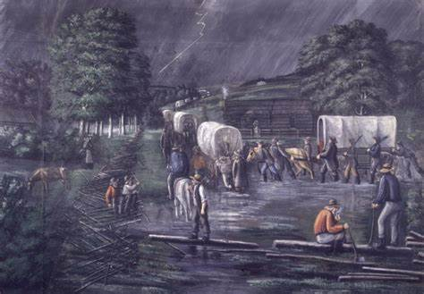

To The Ohio
After the church was organized many people began to hear about the new religion. Some were very excited and desired to learn more. Others didn’t react so positively. Joseph had built a dam so they could hold a baptismal service the following day. The next day they found that the dam was destroyed. They decided to hold a simple meeting instead. After the sermon, a local minister and his followers tried to break up the meeting and drag the believers away. They eventually baptized these new believers in Colesville, but they were unable to confirm them because they were being heckled by a group of 50 angry men. Joseph was then arrested for “causing an uproar in the community.”
Joseph called several men to go on a mission Missouri to preach to the Native American people in the west. These men stopped in Ohio and taught and baptized many people in the Kirtland area. The Lord commanded the new Saints to gather at the Ohio.
 Heading to OhioInternal Conflict
After a few years in Kirtland tension between Joseph Smith and some of the other elders of the church had become worse. One of these men, Ezra Booth, criticized Joseph and complained about him openly. The saints were encouraged to forgive these attacks freely.
These attacks by Ezra became worse. He published a letter in a local newspaper attacking Joseph and the saints. This letter caused many people to be wary of the message of the restored church. At this same time, many of the members of the church wanted more access to Joseph’s revelations. They decided to print 10,000 copies of the revelations. Some of the men were embarrassed about how uneducated Joseph was and how limited his vocabulary was. The Lord challenged them to write a better revelation. None of them could do it. Joseph truly had the Lord on his side. Unfortunately, this didn’t stop the church from having internal conflict.
In February 1832 Joseph received a revelation that would come to be known as “The Vision”. This was a revelation about heaven and the afterlife. It shows that God is a loving God and that He has a plan to save all of His earthly children in a kingdom of glory. Although many people embraced these new concepts with faith, some people were angry at this new doctrine. Some of these angry men decided they needed to stop Joseph Smith.
In late March of that same year, a group of men grouped together in preparation to tar and feather the prophet. The men barged into the home of Joseph and Emma Smith and started to drag Joseph from the house. They beat him bitterly and choked him until he stopped resisting their attack. With Joseph was Sydney Rigdon being beaten by these evil men. Forced tar into Joseph’s mouth and poured tar and feathers all over his exposed body. The next day Joseph got dressed a preached a sermon and baptized three people. He received much bodily harm, and Sydney Rigdon lay in bed teetering between life and death. A few weeks later one of Joseph’s young children died of an illness that was made worse by being exposed to the cold air on the night of the attack.
Like always, the saints persevered through these trials and got stronger. They built a beautiful temple in Kirtland and experienced many great and marvelous miracles. The good always outweighed the bad. After more time in Kirtland the Lord commanded the Church to gather in Zion. The persecution in Ohio had become worse again, and it was finally time for the whole church to be in Missouri.